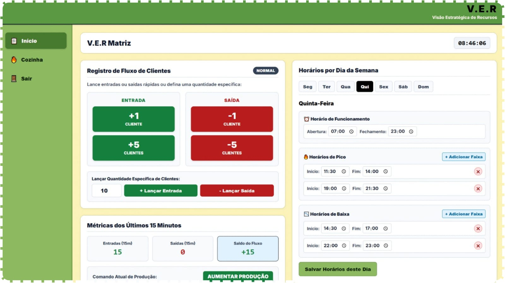
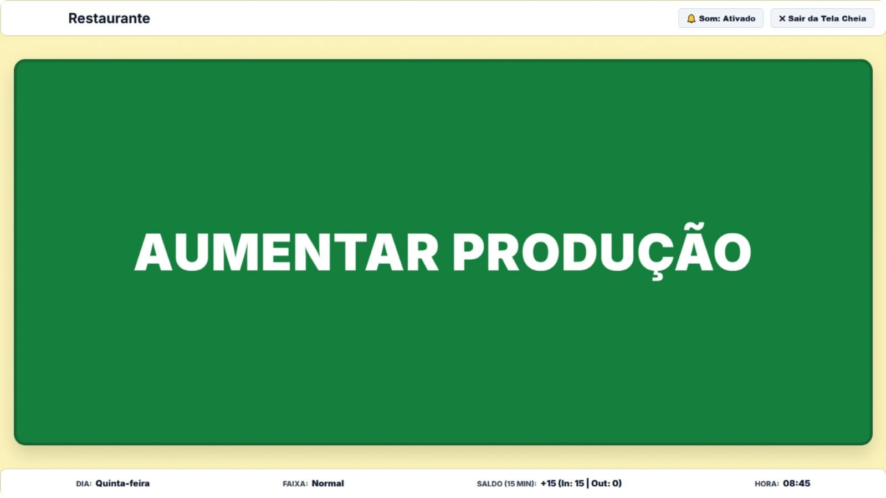

O problema inicial
Muitas vezes, os buffets produzem comida demais e acabam jogando alimentos fora. Nossa ideia é ajudar a produzir somente o necessário.
Sobre o projeto
O Smart Buffet é um sistema criado para ajudar restaurantes a diminuir o desperdício de alimentos.
Como funciona?


-
Recepção
A recepção registra a quantidade de clientes do restaurante.
-
Sistema
O sistema utiliza essa informação para orientar a produção.
-
Cozinha
Na tela da cozinha, os funcionários conseguem ver se precisam produzir mais ou menos alimentos.
Benefícios do Smart Buffet
- Diminuir o desperdício de comida.
- Economizar ingredientes.
- Melhorar a organização da cozinha.
- Ajudar o meio ambiente.

Quem pode utilizar?
O sistema pode ser utilizado em restaurantes, cozinhas, buffets e outros estabelecimentos que servem refeições.